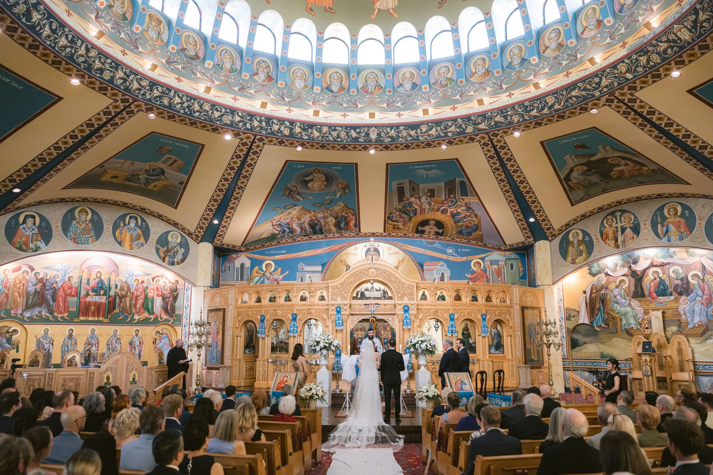
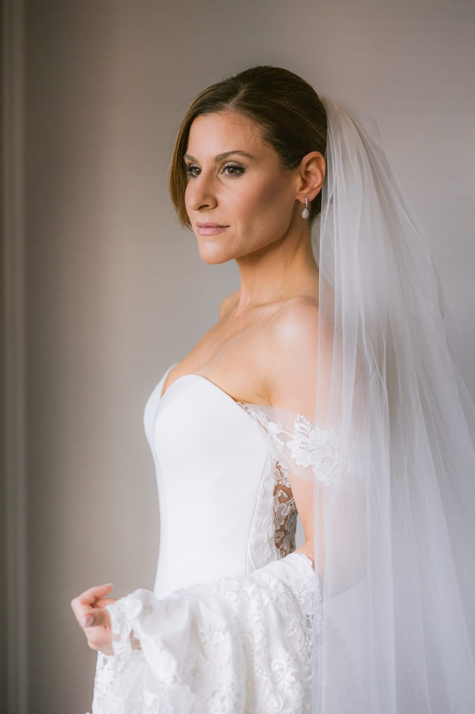
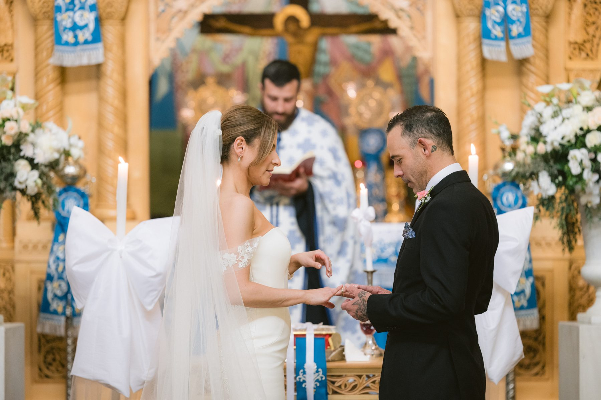
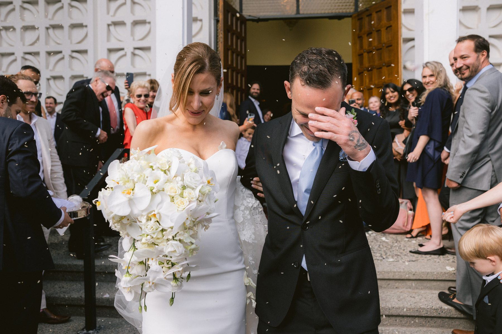
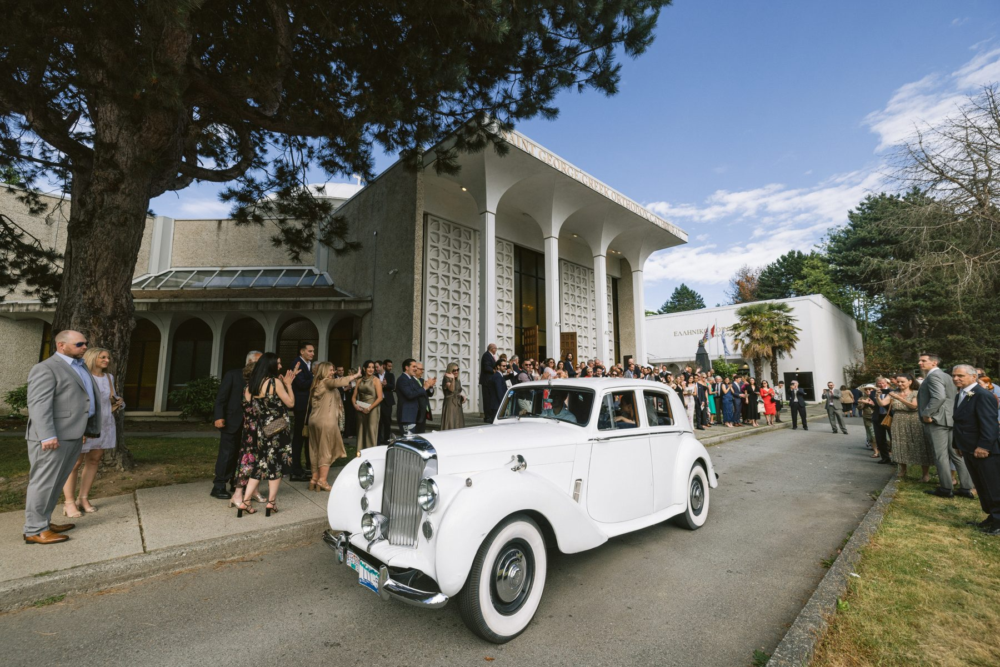
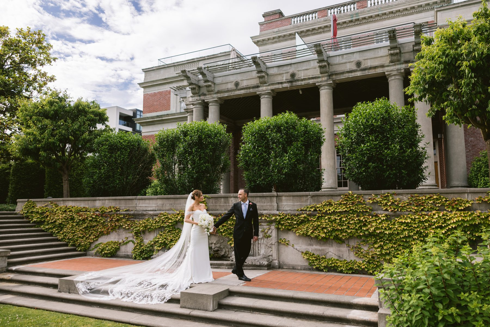
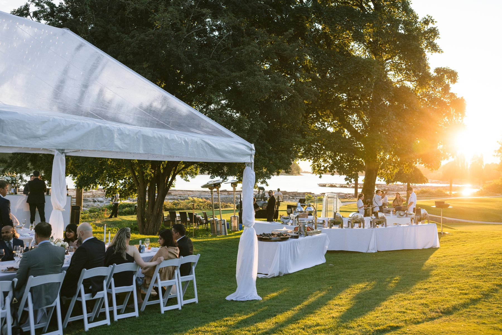
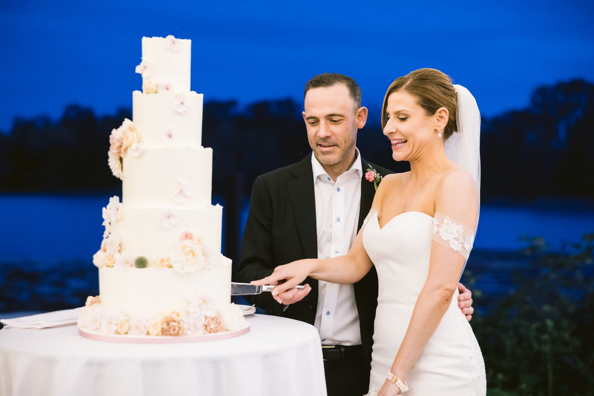
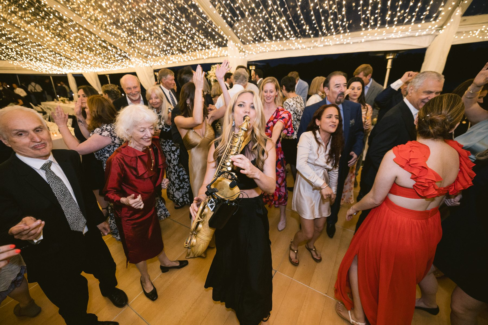

Demetra and Johnny's wedding had a dome, a vintage car, a clear tent on a lawn beside a river, and a saxophone. I would not change a single part of it.
It is also a good case study in how to photograph a long, traditional ceremony and a big party on the same day without losing either one.
Demetra got ready in a hotel suite on a high floor. A white strapless gown on the door frame, shoes and invitations laid out on a gold card, a ring light on the dresser, and a seagull sitting on the window ledge looking in. I could not have planned the seagull.

Tip for the details shot. Bring the invitation suite and rings early, before hair and makeup eat the room. Ten minutes on a clean surface by the window gives your photographer a full set of flat lays, and that is all you need.
They married in a Greek Orthodox church in Vancouver. Gold iconostasis, blue and gold painted ceiling, a white dome overhead, and a congregation that filled every pew.
If you are planning a traditional Orthodox service, here is what I wish more couples told us in advance.
First, it is long. Plan your day around that, not against it. Second, the light inside a church like this is warm, low and mixed, so the camera work has to be quiet and fast. Third, talk to your priest before the day about where we can stand and when. Every church has its own rules, and the best photos come from a photographer who has already agreed to them.

The crowning is the heart of the service. Two crowns joined by a ribbon, exchanged three times above the couple's heads. It is slow and symbolic and almost impossible to stage. You cannot rush it, and you should not want to.
When the doors opened, the whole congregation spilled out onto the steps. Confetti, hugging, a groom wiping his eyes, and a bride holding a cascade of white orchids with both hands.

Then, a vintage white car at the curb. It was waiting for them like an old friend.

I like a moment like this because it gives the whole day a beat. After the long ceremony, a short ride gave Demetra and Johnny a minute alone, and then it was time for photos.
We drove to a stately garden with stone steps, clipped hedges and a red brick building behind. Demetra's veil was long enough to fill every step, so we let it. The best photo of the afternoon came from the simplest idea. Put her at the top of a staircase, spread out the veil, and step back.

Two things to remember. Bring a helper whose only job is the veil. And budget twenty five minutes for portraits in a location that has multiple looks. A staircase, a lawn, a brick wall and a colonnade give you a full portrait gallery in one place.
The reception was on a lawn running down to a wide, slow river. A long clear tent with string lights overhead, white tables, a long head table facing the water, and an evening sky doing something extraordinary.

This is a format worth stealing. A clear roof lets the sky in until the last light, then turns into a ceiling of stars once the string lights come on. You get daylight and night in the same room.

Family and friends spoke. Some were funny. Some made the room go quiet. Nobody was in a hurry.
Then the dance floor opened and a live saxophonist walked out into the crowd. That moment turned a lovely dinner into a party. People of every age were on the floor and nobody left until late.

Plan the timeline around the ceremony, not the other way round. Walk the church with your photographer. Keep the transport between locations in the story. And if you are marrying near water, give the reception a view of it.
Demetra and Johnny did all of that, in front of a packed church, and it still felt personal.
SimplyWed Studio is a Vancouver wedding and elopement photography studio. Tell us about your ceremony through the contact page and we will plan the day around it, including the long parts. For more on how much coverage a day like this needs, read how many hours of wedding photography you really need.
← Back to the journal